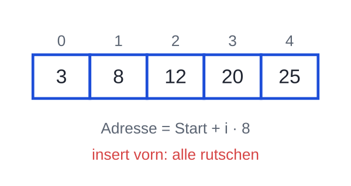

Überblick › LB 2/3 Datenstrukturen
3.0.1 Was kostet das Einfügen in eine Liste?
Im Kino sitzt eine Schulklasse lückenlos in Reihe 7, Platz 1 bis 20. Eine Nachzüglerin will unbedingt auf Platz 1 neben ihre Freundin. Dafür muss jede Person einen Platz weiter nach rechts rutschen – 20 Personen stehen auf, damit eine sitzen kann. Wäre sie zu Platz 21 gegangen, hätte niemand aufstehen müssen.
Genau so arbeitet eine Python-Liste. Du hast sie in Klasse 11 ständig benutzt: append, insert, pop, liste[i]. Auf dieser Seite überlegst du, wie viel Arbeit hinter jedem dieser Befehle steckt. Daraus ergibt sich die Frage, mit der das ganze Kapitel „Datenstrukturen“ beginnt: Geht Einfügen auch ohne Rutschen?
Schritt 1: Wie eine Python-Liste im Speicher liegt
Eine Python-Liste belegt einen zusammenhängenden Speicherbereich. Die Plätze liegen lückenlos hintereinander, jeder Platz ist gleich groß (in Python 8 Byte, denn jeder Platz enthält einen Verweis auf das eigentliche Objekt).
Index: 0 1 2 3 4
+------+------+------+------+------+
liste → | 3 | 8 | 12 | 20 | 25 |
+------+------+------+------+------+
Adresse: 1000 1008 1016 1024 1032Deshalb kann der Rechner die Adresse jedes Elements ausrechnen, statt es zu suchen:
Adresse(i) = Startadresse + i · 8
liste[4] liegt also bei 1000 + 4 · 8 = 1032. Diese Rechnung dauert gleich lang, ob die Liste 5 oder 5 Millionen Elemente hat.
Im Video siehst du diese Rechnung noch einmal und probierst in Thonny liste[4], append und pop() aus. Achte darauf, bei welchen Befehlen kein einziges Element seinen Platz wechselt.
Kurz geprüft 1: Adresse ausrechnen AFB I
Eine Python-Liste beginnt an der Adresse 2000. An welcher Adresse liegt liste[6]? Dauert das Lesen von liste[600000] in einer sehr langen Liste länger als das Lesen von liste[6]?
Lösung zeigen
2000 + 6 · 8 = 2048. Nein: Auch für liste[600000] wird die Adresse mit einer einzigen Rechnung bestimmt (2000 + 600000 · 8). Der Zugriff über den Index kostet immer O(1).
Weiter mit Schritt 2: Einfügen und Löschen →
Schritt 2: Einfügen und Löschen: Wer muss rutschen?
Weil keine Lücken erlaubt sind, muss beim Einfügen an Position k jedes Element ab Position k einen Platz nach hinten rücken – von hinten beginnend, damit nichts überschrieben wird. Beim Löschen rücken alle Elemente hinter der Lücke einen Platz nach vorn.
Im Video siehst du insert(1, 5) Platz für Platz und danach die Rechnung aus Beispiel 1 in Thonny. Achte darauf, in welcher Reihenfolge die Elemente rücken und wie man die Verschiebungen zählt.

liste.insert(1, 5) n = 5, k = 1
vorher: | 3 | 8 | 12 | 20 | 25 | |
↘ 25 rückt von 4 nach 5
↘ 20 rückt von 3 nach 4
↘ 12 rückt von 2 nach 3
↘ 8 rückt von 1 nach 2
nachher: | 3 | 5 | 8 | 12 | 20 | 25 | → 4 Verschiebungen = n − k| Operation (Liste mit n Elementen) | Verschiebungen | Aufwand |
|---|---|---|
liste[i] lesen oder überschreiben | 0 (Adresse ausrechnen) | O(1) |
liste.append(x) – hinten anhängen | 0 | O(1) im Mittel (siehe unten) |
liste.pop() – letztes Element entfernen | 0 | O(1) |
liste.insert(k, x) | n − k | O(n) |
liste.insert(0, x) – vorn einfügen | n (alle) | O(n) |
liste.pop(k) bzw. del liste[k] | n − k − 1 | O(n) |
liste.pop(0) – vorn entfernen | n − 1 | O(n) |
x in liste, liste.remove(x) | Suchen von vorn (bis zu n Vergleiche), bei remove zusätzlich Verschieben | O(n) |
Zum Nachlesen steht die Rechnung aus dem Video in Beispiel 1:
Kurz geprüft 2: Wer rückt wohin? AFB I
Gegeben ist zahlen = [10, 20, 30, 40, 50, 60]. Es wird zahlen.insert(2, 25) ausgeführt. Welche Elemente rücken, in welcher Reihenfolge, und wie viele Verschiebungen sind es?
Lösung zeigen
Es rücken 60, 50, 40 und 30 je einen Platz nach hinten – von hinten beginnend, sonst würde ein Wert überschrieben. Das sind n − k = 6 − 2 = 4 Verschiebungen. Danach ist zahlen = [10, 20, 25, 30, 40, 50, 60].
Danach: Aufgabe 3.0.1.1 – Verschiebungen für verschiedene Befehle zählen, und Aufgabe 3.0.1.2 – was passiert, wenn man vorn einfügen in einer Schleife wiederholt.
Weiter mit Schritt 3: Einfügen in eine sortierte Liste →
Schritt 3: Einfügen in eine sortierte Liste
Eine Bestenliste ist absteigend sortiert. Eine neue Punktzahl muss an der richtigen Stelle eingefügt werden – alle kleineren Werte rücken dafür einen Platz nach hinten. Damit man die Verschiebungen sieht, schreiben wir das Einfügen selbst, statt insert zu benutzen. Achte im Video darauf, wie die freie Stelle i von hinten nach vorn wandert und warum die Schleife genau beim ersten größeren Wert anhält.
einfuegen_sortiert Schritt für Schritt (ca. 2 min)Zum Nachlesen steht derselbe Code mit allen Erklärungen in Beispiel 2:
Kurz geprüft 3: Die freie Stelle verfolgen AFB I
Verfolge einfuegen_sortiert([90, 70, 50, 30, 10], 60) mit Papier: Welche Werte rücken nach hinten, wo landet die 60, und was gibt die Funktion zurück? Prüfe danach in Thonny.
Lösung zeigen
Nach append(None) ist die freie Stelle i = 5. Es rücken 10, 30 und 50 je einen Platz nach hinten (alle kleiner als 60), bei 70 < 60 endet die Schleife. Die 60 kommt auf Platz 2: [90, 70, 60, 50, 30, 10], Rückgabe 3.
Weiter mit Schritt 4: Und wenn der Platz nicht reicht? →
Schritt 4: Und wenn der Platz nicht reicht?
Hinter dem letzten Element ist nicht unbegrenzt Platz frei, denn dort kann schon etwas anderes im Speicher liegen. Python reserviert deshalb einige Plätze mehr, als die Liste gerade braucht. Man unterscheidet die Länge (belegte Plätze) und die Kapazität (reservierte Plätze). Ist die Kapazität erschöpft, sucht Python einen größeren freien Bereich, kopiert alle n Elemente dorthin und gibt den alten Bereich frei. Dieser „Umzug“ kostet O(n).
Trotzdem gilt append als O(1), weil Umzüge selten sind. Im einfachsten Modell verdoppelt sich die Kapazität bei jedem Umzug. Startet man mit Kapazität 1 und hängt 16 Elemente an, wird beim 2., 3., 5. und 9. Anhängen umgezogen. Dabei werden 1 + 2 + 4 + 8 = 15 Elemente kopiert – weniger als ein Kopiervorgang pro Anhängen. Man sagt: append ist im Mittel (amortisiert) O(1).
Python vergrößert in Wirklichkeit nicht um den Faktor 2, sondern um etwa ein Achtel. An der Aussage „im Mittel O(1)“ ändert das nichts, solange die Kapazität um einen festen Faktor wächst.
Im Video siehst du einen solchen Umzug als Bild. Achte darauf, was beim Umzug kopiert wird und warum das trotzdem selten ins Gewicht fällt.
Kurz geprüft 4: Länge und Kapazität AFB I
Eine Liste hat die Länge 6 und die Kapazität 8. Wie viele append-Aufrufe gehen noch ohne Umzug? Wie viele Elemente werden beim nächsten Umzug kopiert, und welche Kapazität hat die Liste danach, wenn sie sich verdoppelt?
Lösung zeigen
Zwei append-Aufrufe passen noch (Länge 7 und 8). Beim dritten ist die Kapazität erschöpft: Alle 8 Elemente werden kopiert, die neue Kapazität ist 16, und das neue Element kommt auf Platz 8.
Hinweis: Umzüge selbst durchklicken
Öffne im Kursmenü links die Seite Zeiger-Werkstatt. Dort gibt es den Modus Felder. Wähle als Start „Länge 6, Kapazität 8“ und hänge Schritt für Schritt an: So kontrollierst du Kurz geprüft 4. Mit „leer, Kapazität 1“ und 16 Anfügungen siehst du die Rechnung aus diesem Schritt (4 Umzüge, 15 kopierte Elemente). Vorne einfügen und vorne löschen kannst du dort auch ausprobieren.
Danach: Aufgabe 3.0.1.3 – Umzüge beim Anhängen selbst zählen.
Die Idee für dieses Kapitel
Alle teuren Operationen haben dieselbe Ursache: Die Elemente müssen lückenlos nebeneinander liegen. Was wäre, wenn jedes Element irgendwo im Speicher liegen dürfte und sich nur merkt, wo das nächste liegt? Dann würde Einfügen bedeuten: zwei Verweise umhängen, niemand muss rutschen. Der Preis: Die Adresse des k-ten Elements lässt sich nicht mehr ausrechnen. Diese Idee heißt verkettete Liste (Seite 3.1). Aus ihr entstehen später Stapel, Schlange, Baum und Graph.
Das Wichtigste
Python-Liste: Sie ist ein dynamisches Array. Die Elemente liegen lückenlos hintereinander in einem zusammenhängenden Speicherbereich.
Zugriff über den Index: O(1), weil die Adresse des Elements berechnet wird.
Einfügen/Löschen am Ende: im Mittel O(1).
Einfügen/Löschen an Position k: O(n), weil alle Elemente dahinter verschoben werden müssen. Am Anfang ist es am teuersten.
O(n)-Operation in einer Schleife: Wird sie n-mal ausgeführt, entsteht insgesamt O(n²).
Zum Nachlesen: Warum O(n²)?
Wird an Position k eingefügt oder gelöscht, müssen n − k Elemente verschoben werden. Wird eine solche O(n)-Operation in einer Schleife n-mal ausgeführt, ergeben sich 0 + 1 + 2 + … + (n − 1) = n(n − 1)/2 Verschiebungen, also O(n²).
Grundaufgaben
Aufgabe 3.0.1.1: Verschiebungen zählen AFB I
Gegeben ist liste = ["a", "b", "c", "d", "e", "f", "g", "h"]. Jede der folgenden Operationen wird einzeln auf diese ursprüngliche Liste angewendet. Gib jeweils an, wie viele Elemente verschoben werden, und wie die Liste danach aussieht.
liste.insert(0, "x")liste.insert(3, "x")liste.append("x")(die Kapazität reicht aus)liste.pop(0)liste.pop()del liste[5]
Aufgabe 3.0.1.2: Zwei Wege zum selben Ergebnis AFB II
Beide Programmteile erzeugen eine Liste mit den Zahlen von n − 1 bis 0:
# Variante A
liste = []
for i in range(n):
liste.insert(0, i)
# Variante B
liste = []
for i in range(n):
liste.append(i)
liste.reverse()- Prüfe für n = 4 von Hand, dass beide Varianten
[3, 2, 1, 0]liefern. - Zähle für n = 4 die Verschiebungen in Variante A. Gib eine Formel für beliebiges n an und berechne den Wert für n = 10 000.
reverse()tauscht das erste mit dem letzten Element, das zweite mit dem vorletzten usw. Bestimme den Aufwand von Variante B in O-Notation und begründe, welche Variante du verwendest.
Das kann ich jetzt
Grau steht, was der Lehrplan verlangt, darunter, was das für dieses Thema konkret heißt. Hake einen Punkt ab, wenn er in deinem Hefter zusammengefasst ist und du ihn ohne Hilfe kannst. Wie du ihn zusammenfasst, entscheidest du selbst. Die Haken speichert nur dein Browser.
Lehrplan LB 2 Liste (Kennen von komplexen Datenstrukturen)